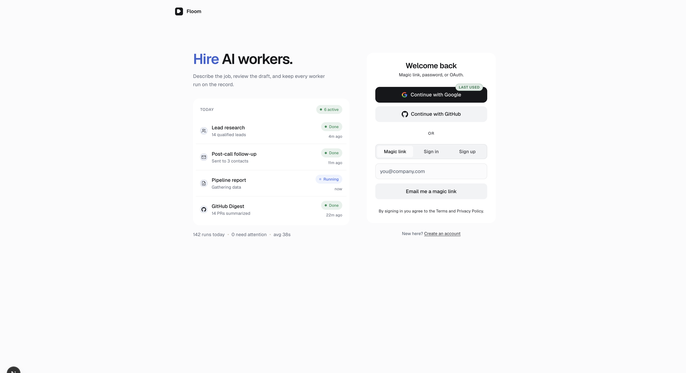
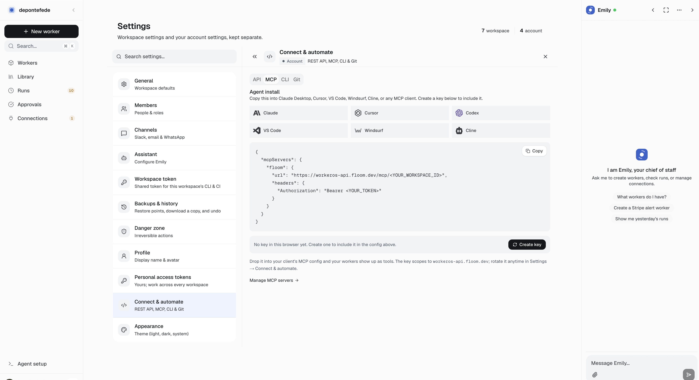
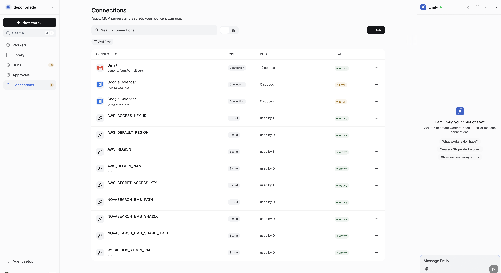

A-01
P1
! OPEN
Landing
cloud
/start/slack + /start/whatsapp return 404
CHANNELS dict lost slack/whatsapp; code restored, prod not deployed
/start/slack ──▶ workeros.floom.dev
│
▼
┌──────────────┐
│ 404 Nothing │ ◀── CHANNELS = { mcp only }
│ here │
└──────────────┘
FIX: restore slack+whatsapp in app/start/[channel]/page.tsx
Drop screenshots/A-01.png
A-02
P1
✓ LIVE
Login
cloud
Dashboard /app/login — old UI not landing #665
Overlay sync restored old split-panel after every npm run sync
OLD (overlay) NEW (landing #665)
┌─────────────────┐ ┌─────────────────┐
│ Floom Cloud │ │ Hire AI workers.│
│ Recent runs LR │ │ Today + squircles│
│ Welcome back L │ │ Welcome back C │
└─────────────────┘ └─────────────────┘

01-localhost-login-welcome-back.png
smoke-routes.sh false-pass on macOS
sha256sum missing → empty hash always matched
macOS: sha256sum ──X──▶ (missing)
│
▼
hash="" == hash="" ──▶ FALSE PASS ✓
FIX: sha256_of() → shasum -a 256 fallback
Drop screenshots/A-03.png
A-04
P2
— TRACK
Tests
cloud+engine
Web vitest 25 failures (#436)
Many Next 16 cookies() outside request scope in harness
vitest ──▶ 760 pass / 25 fail
│
├─ proxy-location (7) cookies() harness
├─ login-magic-link (4) async RSC jsdom
└─ overlay parity (2) env drift
Drop screenshots/A-04.png
A-05
P2
✓ LIVE
Tests
cloud
Landing start-channel-819 failures
Fixed with A-01 — now 16/16
start-channel-819.dom.test.tsx
slack ✓ whatsapp ✓ mcp ✓ (was 8 fail → 0)
Drop screenshots/A-05.png
A-06
P2
— TRACK
CLI
engine
workers push stale bundle (#637)
local edit ──▶ push ──▶ cloud API
│
▼
OLD bundle cached
Drop screenshots/A-06.png
A-07
P2
— TRACK
CLI
cloud
Device-approval dead-end (#588)
cli-auth page ──▶ no session ──▶ dead end
(should redirect to login with next=)
Drop screenshots/A-07.png
A-08
P3
— TRACK
E2E
cloud
Playwright blocked — no E2E token
playwright ──X── WORKEROS_E2E_ADMIN_TOKEN unset
Drop screenshots/A-08.png
A-09
P3
— TRACK
Tests
infra
Pytest blocked on audit machine
pytest ──X── disk full + py3.14 litellm conflict
(repo wants py3.12)
Drop screenshots/A-09.png
A-10
P3
~ DISK
Workers
engine
ASCII diagram worker node accent blue
[trigger]──▶[WORKER]──▶[output]
│
was BLUE (--accent)
fix: --ink (neutral)
Drop screenshots/A-10.png
A-11
P2
~ DISK
Connections
engine
Composio spinner + rogue nav + provider name
connect ──▶ poll ──▶ user navigates away
│
└──▶ stale tick ──▶ router.replace(back!) ✗
FIX: cancelledRef + timeout phase + displayName map
Drop screenshots/A-11.png
A-12
P1
~ DISK
Library
engine
Library tab ~30s load
GET /contexts ──▶ for EACH pack:
download ALL files from Storage
just for file_count ──▶ ~30s
FIX: hydrate=False when cached summary exists
Drop screenshots/A-12.png
A-13
P1
~ DISK
Workers
engine
Memory scope toggle silent no-op
UI: Read ◀──toggle──▶ Read&write
│
▼ PUT /workers/files
engine validator force-pins writeable:True
│
▼ toast "Brain updated" (lie)
Drop screenshots/A-13.png
A-14
P2
~ DISK
Workers
engine
Tab Brain vs nav Library
left nav: Library worker tab: Brain ✗
FIX: WORKER_DETAIL_TAB_LABEL Brain→Library
Drop screenshots/A-14.png
A-15
P1
~ DISK
Connections
cloud
Authorize proxy route blank page
/app/api/proxy/connections/authorize/JWT
│
▼ should 302 ──▶ connect.composio.dev
│
▼ was: blank white page
Drop screenshots/A-15.png
C-01
P1
✓ LIVE
Login
cloud
Landing-aligned login on /app/login
localhost:3000/app/login
┌──────────────┬──────────────┐
│ Hire AI │ Welcome back │
│ workers. │ OAuth + magic│
│ Today card │ link panel │
└──────────────┴──────────────┘
01-localhost-login-welcome-back.png
C-02
P2
? MANUAL
Settings
engine
MCP install panel — 6 client icons
Settings → Connect → MCP
[Claude][Cursor][Cline][Codex][Windsurf][Gemini]
6 icons in a row

05-prod-mcp-install-panel.png
C-03
P2
? MANUAL
Settings
engine
MCP config API host
MCP JSON config:
"url": "https://workeros-api.floom.dev/..."
(not localhost:8000 on prod)
05-prod-mcp-install-panel.png
C-04
P2
~ DISK
Emily
engine
Home empty — real PromptInput
/app/assistant empty state
┌─────────────────────────────┐
│ real composer (not stub) │
│ [Uses: tool chips] [send] │
└─────────────────────────────┘
Drop screenshots/C-04.png
C-05
P2
? MANUAL
Workers
engine
Collection control strip
Workers
[🔍 search] [≡ list|⊞ grid] [+ Add] [New worker]
─────────────────────────────────────────────
03-prod-workers-collection.png
C-06
P2
~ DISK
Settings
engine
List view default NOT gallery
WRONG (was): RIGHT (fix):
[⊞ grid pressed] [≡ list pressed]
┌───┐ ┌───┐ │ General │
│ │ │ │ │ Slack & WA │
└───┘ └───┘ │ People │
04-prod-settings-collection.png
C-07
P2
~ DISK
Connections
engine
Collection + humanized names
Connections list
[GitHub] octocat active
[Google Calendar] ✓ (not Googlecalendar)

06-prod-connections-collection.png
C-08
P2
✓ LIVE
Connections
engine
Redirect — no stale router.replace
poll tick ──▶ unmount ──▶ cancelledRef=true
└──▶ bail (no navigate back)
Drop screenshots/C-08.png
C-09
P2
? MANUAL
Connections
engine
Redirect — Still waiting terminal
spinner ──▶ 2min ──▶ [Still waiting for Google Calendar]
[Check again] [Go to connections]
Drop screenshots/C-09.png
Avatar squircle not circle
was (○) circle want (▢) squircle
federico@ federico@
Drop screenshots/C-10.png
C-11
P2
~ DISK
Emily
engine
Send button squircle
composer [············ (○) ] → [············ (▢) ]
Drop screenshots/C-11.png
C-12
P2
✓ LIVE
Auth
cloud
Localhost Gmail OAuth callback
dev:local ──▶ callback:
localhost:3000/app/api/proxy/auth/callback
COOKIE_DOMAIN=none
Drop screenshots/C-12.png
C-13
P1
! OPEN
Landing
cloud
/start/slack + whatsapp on prod
same as A-01 — code on main, landing deploy pending
Drop screenshots/C-13.png
L-01
P2
~ DISK
Emily
engine
Grey bg on empty state
--bg-app (warm) vs grey #eee leak on Emily home
Drop screenshots/L-01.png
L-02
P3
? MANUAL
Emily
engine
Greeting typography
"Good morning" — size/weight off spec
Drop screenshots/L-02.png
L-03
P2
~ DISK
MCP
engine
Client logos IconSprite
icon-claude icon-codex icon-cline … in IconSprite.tsx
05-prod-mcp-install-panel.png
L-04
P2
? MANUAL
MCP
engine
Create key flow
[Create access key] ──▶ PAT panel ──▶ copy/reveal
Drop screenshots/L-04.png
L-05
P2
? MANUAL
MCP
engine
localhost:8000 in prod copy
MCP install snippet must show workeros-api.floom.dev
Drop screenshots/L-05.png
L-06
P1
~ DISK
Library
engine
Empty / slow load
same as A-12 — Storage hydration on list
Drop screenshots/L-06.png
L-07
P2
~ DISK
Auth
cloud
Session switch Google picker
/app/login?switch=1 ──▶ Google account chooser
Drop screenshots/L-07.png
L-08
P3
✓ LIVE
Collections
engine
List toggle left of grid
view bar: [ ≡ list ] [ ⊞ grid ]
^left ^right
Drop screenshots/L-08.png
L-09
P2
~ DISK
Approvals
engine
Proposed output layout
approval detail ──▶ proposed output container queries
Drop screenshots/L-09.png
L-10
P2
~ DISK
Emily
engine
Tool-call in-progress UX
Emily: "Searching connections…" status line during tool
Drop screenshots/L-10.png
L-11
P1
~ DISK
Connections
cloud
Blank authorize page
same as A-15
Drop screenshots/L-11.png
L-12
P2
~ DISK
Settings
engine
Gallery default
same as C-06 — emptyState("grid") bug
04-prod-settings-collection.png
L-13
P2
? MANUAL
Settings
engine
Backups / version history
Settings → Backups → restore points list
Drop screenshots/L-13.png
L-14
P2
~ DISK
Runs
engine
?shape=run lightweight load
/app/run/id?shape=run ──▶ skip heavy payload
Drop screenshots/L-14.png
L-15
P2
~ DISK
Emily
engine
Inline tool tokens Uses:
prompt: "Uses: [Gmail] [Calendar] [GitHub]" inline chips
Drop screenshots/L-15.png
Localhost OAuth + prod .env.local
web/.env.local ──▶ prod API ──▶ Domain=.floom.dev cookies ✗
USE: npm run dev:local + ops/dev-local-api.sh
Drop screenshots/D-01.png
D-02
P2
✓ LIVE
Process
cloud
Fake audit screenshots
audit-preview PNGs recycled as "verified" ──▶ rejected
Drop screenshots/D-02.png
D-03
P2
✓ LIVE
Process
cloud
Corrupt login screenshot
01.png was black "Pretty print" screen ──▶ replaced
01-localhost-login-welcome-back.png
D-04
P1
! OPEN
Deploy
cloud
Vercel CI failures
dashboard: build fail (listWorkspaceChangelog)
landing: apex /v3/integrations 404 after alias
Drop screenshots/D-04.png
D-05
P1
✓ LIVE
Deploy
cloud
listWorkspaceChangelog missing
overlay/lib/api.ts ──▶ add listWorkspaceChangelog()
Drop screenshots/D-05.png
D-06
P1
✓ LIVE
Deploy
cloud
Login overlay sync bug
#665 ──▶ web/app/login ✓
sync ──▶ overlay/login overwrites ✗
01-localhost-login-welcome-back.png
D-07
P2
— TRACK
Process
process
Engine local edits diverge
hand-edit engine/ ──▶ next bump wipes ──▶ PR floom first
Drop screenshots/D-07.png
D-08
P2
? MANUAL
Deploy
cloud
Railway smoke gate
push main ──▶ railway up ──▶ ops/smoke-routes.sh
Drop screenshots/D-08.png